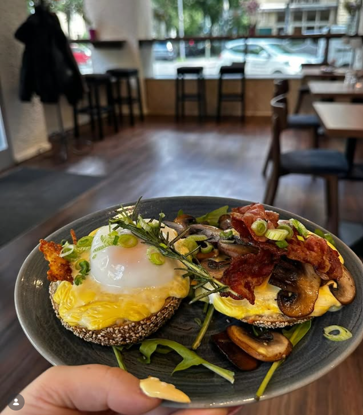
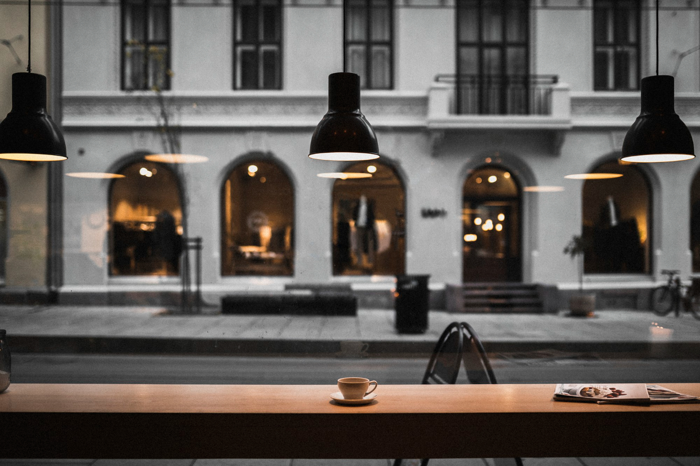

Eindrücke aus dem Café
Frühstück, Bowls und wechselnde Tagesküche – frisch angerichtet und zum Dableiben gemacht. Ein paar Teller aus einer ganz normalen Woche bei Yewgeniy & Emma.



Frisch gerösteter Kaffee, warme Croissants und ein Frühstück, für das man gern früher aufsteht – mitten im Kiez, bei Yewgeniy & Emma.
Frühstück, Bowls und wechselnde Tagesküche – frisch angerichtet und zum Dableiben gemacht. Ein paar Teller aus einer ganz normalen Woche bei Yewgeniy & Emma.

Alles hausgemacht, wo es geht, und täglich frisch. Die vollständige Karte mit Preisen findest du bei uns am Tresen – hier ein Überblick über das, was es bei Yewgeniy & Emma gibt.
Espresso, Cappuccino, Flat White und Filterkaffee aus frisch gerösteten Bohnen. Hafer-, Soja- oder Kuhmilch ohne Aufpreis. Wer es ohne Koffein mag, bekommt einen richtig guten Entkoffeinierten – kein Kompromiss, sondern eine eigene Wahl auf der Karte.
Von der einfachen Stulle bis zur vollen Frühstücksplatte mit Rührei, Avocado, Obst und warmem Brot. Am Wochenende gibt es Brunch bis 15 Uhr – für größere Runden empfehlen wir eine Reservierung.
Croissants und Zimtschnecken aus eigener Backstube, dazu wechselnde Kuchen – Karotte, Käse-Sahne, Schoko und saisonales Obst. Ein veganes Stück steht immer im Tresen.
Hausgemachte Limonaden, Cold Brew, Eiskaffee und frisch gepresste Säfte. Im Sommer dazu Eistee vom Fass und Matcha über Eis – alles ohne künstliche Aromen.
Wochentags von 12 bis 15 Uhr: eine wechselnde warme Tagesempfehlung, Quiche, Suppen und belegte Focaccia. Immer mit einer vegetarischen und einer veganen Option. Zum Mitnehmen im Mehrwegbehälter oder in Ruhe bei uns – ein Blick auf die Tafel am Eingang verrät, was heute in der Küche steht.
Guter Kaffee ist kein Zufall, sondern eine Kette kleiner Entscheidungen. Diese vier Schritte durchläuft jede Tasse, die bei uns über den Tresen geht.
Wir verkosten regelmäßig neue Kaffees und nehmen nur die auf die Karte, die uns wirklich überzeugen.
Geröstet wird in kleinen Chargen bei unserer Partnerrösterei – hell genug für die Aromen, dunkel genug für Charakter.
Frisch gemahlen, sauber extrahiert, von Baristas, die ihr Handwerk gelernt haben und Zeit dafür bekommen.
Serviert im Porzellan, mit einem Glas Wasser dazu. Zum Hierbleiben oder im Mehrwegbecher für unterwegs.

Am schönsten lässt sich ein Café über die Menschen beschreiben, die immer wiederkommen. Ein paar Stimmen aus dem Gästebuch und von Google, mit freundlicher Genehmigung.
„Der beste Cappuccino in Laufweite – und die Zimtschnecken sind gefährlich gut. Ich komme fast jeden Morgen vor der Arbeit vorbei.“
Lena K. — Stammgast
„Wir sind mit zwei kleinen Kindern reingekommen und wurden so herzlich empfangen, dass wir geblieben sind, bis der Kuchen alle war.“
Familie M. — Sonntagsbrunch
„Ich arbeite hier regelmäßig mit dem Laptop. Guter Kaffee, schnelles WLAN, und niemand schaut komisch, wenn man etwas länger bleibt.“
Sven B. — Freelancer aus dem Kiez
Ja – besonders für den Wochenendbrunch empfehlen wir das. Ruf uns einfach an oder schreib eine kurze Mail mit Datum, Uhrzeit und Personenzahl.
Immer. Pflanzenmilch gibt es ohne Aufpreis, und im Kuchentresen steht täglich mindestens ein veganes und ein glutenfreies Stück. Beim Mittagstisch ist stets eine vegane Option dabei.
Gern, unter der Woche vormittags und nachmittags. Beim Wochenendbrunch bitten wir darum, die Tische fürs Essen frei zu halten.
Ja, angeleinte Hunde dürfen mit rein. Einen Napf mit Wasser stellen wir hin.
Torten und Bleche für Geburtstage oder kleine Feiern gern mit ein paar Tagen Vorlauf. Für Catering im Büro sprich uns direkt an, dann stellen wir etwas Passendes zusammen.
Am besten lernt man uns bei einer Tasse Kaffee kennen. Für Reservierungen, Catering-Anfragen oder einfach ein Hallo – hier erreichst du uns.
Reservierung empfohlen für den Wochenendbrunch